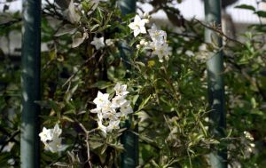
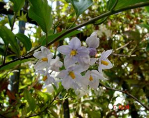

Flora ornamental del Campus de Reina Mercedes, Universidad de
Sevilla - Ficha nº 60 - Versión 1*
|
Solanum jasminoides Paxton,Paxton's
Mag. Bot. 8: t. 5 (1841)
S. crispum Ruiz & Pav. |
Solanáceas |
| Falso
jazmín, solano, velo de novia (1) |
Trepadora leñosa |
|
Planta trepadora leñosa, perennifolia, con tallos volubles. Hojas simples, alternas, de c. 4 x 2 cm, elípticas, glabras, de un verde oscuro en el haz y algo más claras en el envés. Inflorescencias: cimas en forma de corimbo. Flores hermafroditas, actinomorfas, de unos 2 cm; cáliz con 5 sépalos; corola en forma de estrella, con 5 pétalos soldados en la base, de color blanco, aunque también pueden ser lilas; 5 estambres amarillos que sobresalen formando un cono por encima del tubo de la corola; ovario entero, súpero. Florece prácticamente durante todo el año. (1) Fruto baya, de unos 4 cm, de
un color morado
intenso y de olor desagradable. |
 Foto: Carlos Romero Zarco, 2006 |
|
 Foto: Juan de Dios Franco
Navarro, 2006 |
Observaciones: El nombre genérico deriva del latín solari, aliviar, por las propiedades de algunas de las especies del género. El epíteto específico alude al parecido superficial de sus flores con las del jazmín. Al género Solanum pertenecen plantas de gran importancia económica, como la patata, el pepino y la berenjena. Existe otra especie similar: Solanum crispum, que se ha considerado a veces como sinónimo de S. jasminoides.(1) |
|
Área de origen.- Centro y Sur de América |
|
| Uso en el campus:
como trepadora
cubriendo dos lienzos de valla. |
Localización: Jardín del Instituto de Idiomas |
| (1) Jesús Morales, Infojardín (www.infojardin.com) | |
|
Eduardo Fagundo Amadeo (2006) & Carlos Romero Zarco (2007) |
|